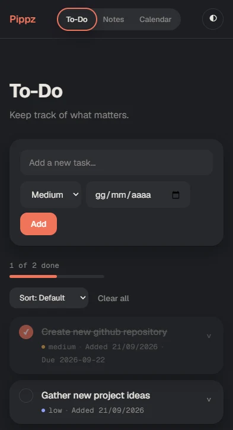
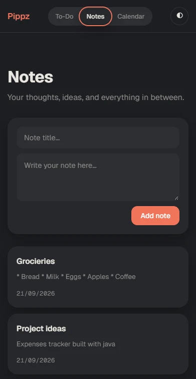
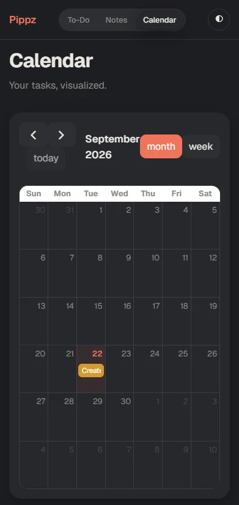
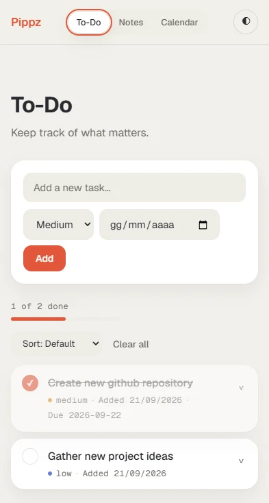

To-Do List
A small Flask app for tasks, notes and a calendar — built to actually use, not just to demo.

To-Do
Add a task with a priority and an optional due date. Reminders-style circles mark things done, and a progress bar tracks how much of the list is finished.
Notes
A second tab for anything that isn't a task: a quick note, an idea, a list. Each one opens into its own editor to expand on later.

Calendar
Tasks with a due date show up automatically on a month view, color-coded by priority, so deadlines are visible at a glance.

Dark & light

How it's built.
The backend is a small Flask app: tasks and notes are stored as JSON files on disk, and each action (add, toggle, edit, delete) is its own route that rewrites the file and redirects back to the page. No database, no accounts, nothing to configure.
The three tabs live on a single page and are swapped with a few lines of JavaScript, so switching between them is instant. The calendar view is the exception: it's rendered by FullCalendar, fed by a small JSON endpoint that turns tasks with a due date into events.